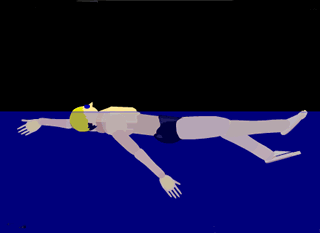
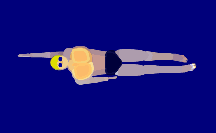
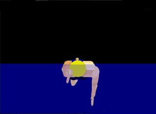

仰泳
身体姿势
仰泳时，身体平直躺在水中，胸部自然挺起，脸部露出水面，两臂在体侧交替划水，上体随着划水可自然转动，但头部保持稳定。
  
腿的动作
踢水时，两腿从自然伸直开始，踩关节放松，以大腿带动小腿做向上踢水动作。
向下打水时，腿部要伸直，做向下*压*水的动作。这样能产生向上浮力。
向上踢水时要用力，膝盖稍屈，两腿踢水动作要连贯、协调。
仰泳腿要体会大腿用力，上抬与下压都要有，体会大腿带动小腿的感觉。
臂的动作
仰泳两臂划水是前进的主要力量。
开始时，一臂在同侧肩前稍靠外处入水，入水时手指自然并拢，掌心向后，小拇指先入水；
接着手臂做抓水并向下、向上、向后、向下划水，划水时五指自然并拢，掌心对着划水方向。
当划水约至肩侧前时，肘部开始弯曲，用最大力量划至大腿旁边，然后手臂放松，以肩部向上转并带动手臂使小指先自然提出水面，经空中再做入水动作。
仰泳两臂的配合，当一臂划水结束，将向上提出水面前，另一手臂即做入水动作。
呼吸
当左(右)臂一提出水前移时吸气，接着憋气；
当右(左)臂提起前移时吸气。
动作要领
-
头部及躯干
- 头部保持稳定没有左右摆动。
- 身体始终保持伸展、正直、几乎水平地仰卧于水面，好像平躺在床上，头下有一只矮枕头。
- 躯干和肩随手臂动作围绕纵轴转动，始终有一肩不露出水面。
-
手臂
- 臂划水时，出水以大拇指领先，移臂时手臂与水面垂直，上臂贴近耳朵。移臂过程中手臂旋转，入水时小拇指领先插入水中。
- 移臂时手臂紧贴身体不能太宽。
- 移臂时如果手臂易弯曲，则可暂时用小拇指领先出水，养成直臂出水的习惯以后再用大拇指领先出水。
- 如果以头的位置为钟表12点，两手的入水点在11点和1点的位置。手入水后先直臂下划。
- 两臂划水应与身体转动协调配合，两肩不断形成位置差。
- 两臂划水配合采用中交叉方式，即两臂始终处于相反的位置，一臂划水时，另一臂移臂。
-
呼吸
- 呼吸虽然不受限制，但最好采用有节奏的呼吸方式，或以固定在一臂移臂时吸气。毕竟划水以及身体在水中行进时会有波浪及水花。随意呼吸易呛水。
-
腿部打水
- 两腿交替做鞭状上下打水。向上打水要快而有力，脚略内旋并绷直，向下打水时腿和脚自然放松。
-
节奏
- 仰泳时，一般是踢6次腿，两臂各划水1次，配合1次呼吸。也有采用踢4次腿，两臂各划水2次，配合1次呼吸。